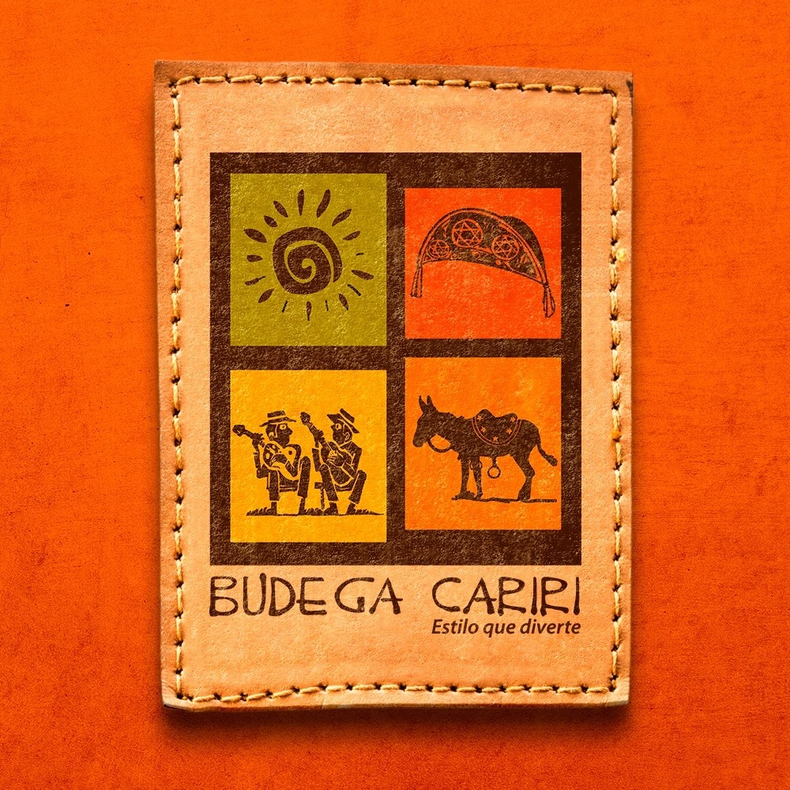

INÍCIO
CRATO
JUAZEIRO DO NORTE
BARBALHA
Locais Religiosos
Locais Turísticos
Restaurantes e Bares
Hotéis e Pousadas
Menu
Locais Religiosos
Locais Turísticos
Restaurantes e Bares
Hotéis e Pousadas
Restaurante Coisas do Sertão
Clique Aqui
Cantina Zé Ferreira
Clique Aqui
Terraço São Bento
Clique Aqui
Mão de Vaca
Clique Aqui
Baião.com
Clique Aqui
Central da Picanha
Clique Aqui

Budega Cariri
Clique Aqui